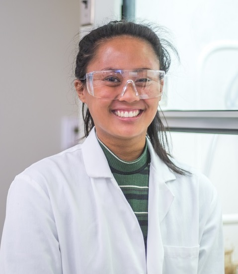
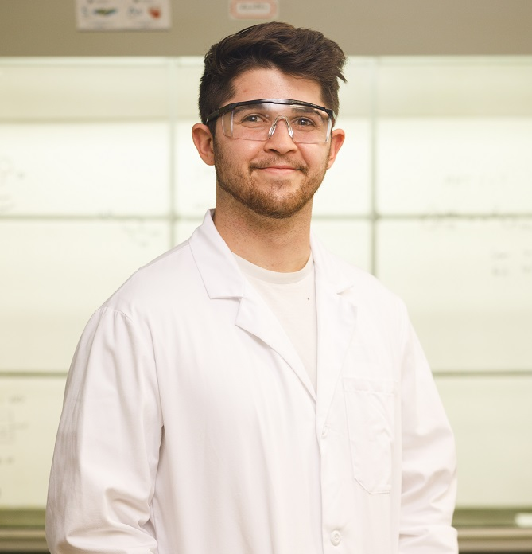
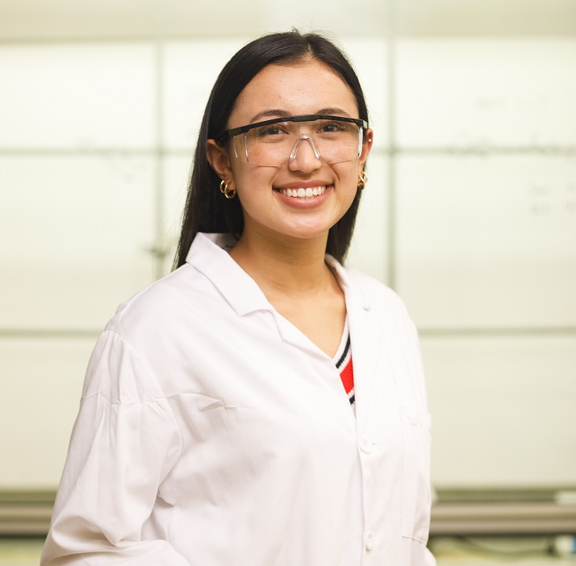
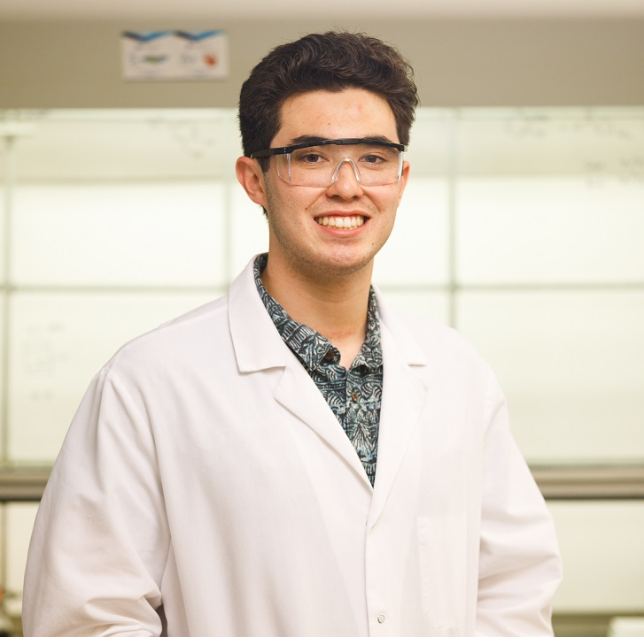
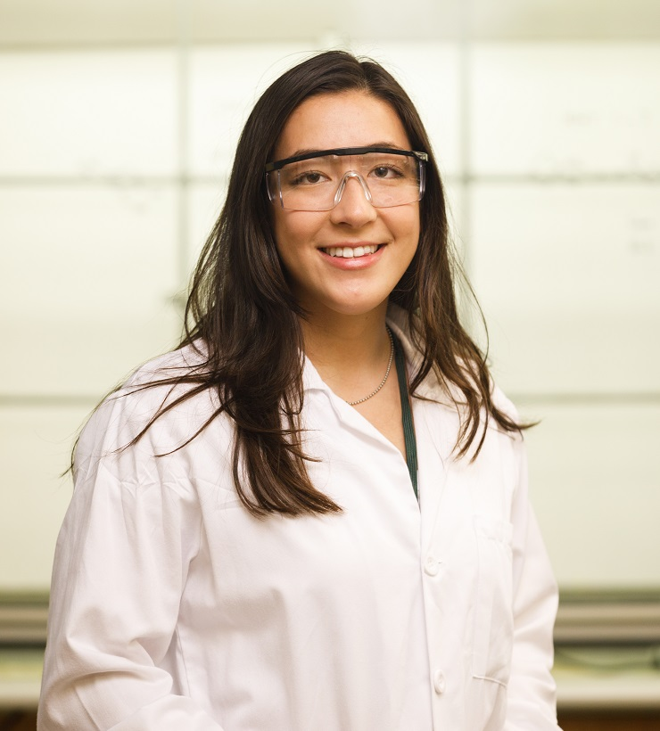
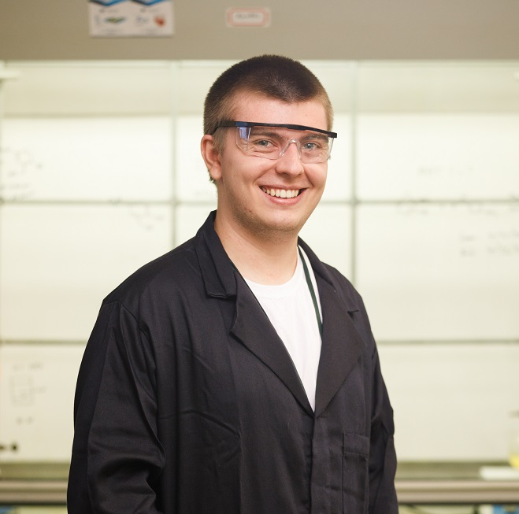
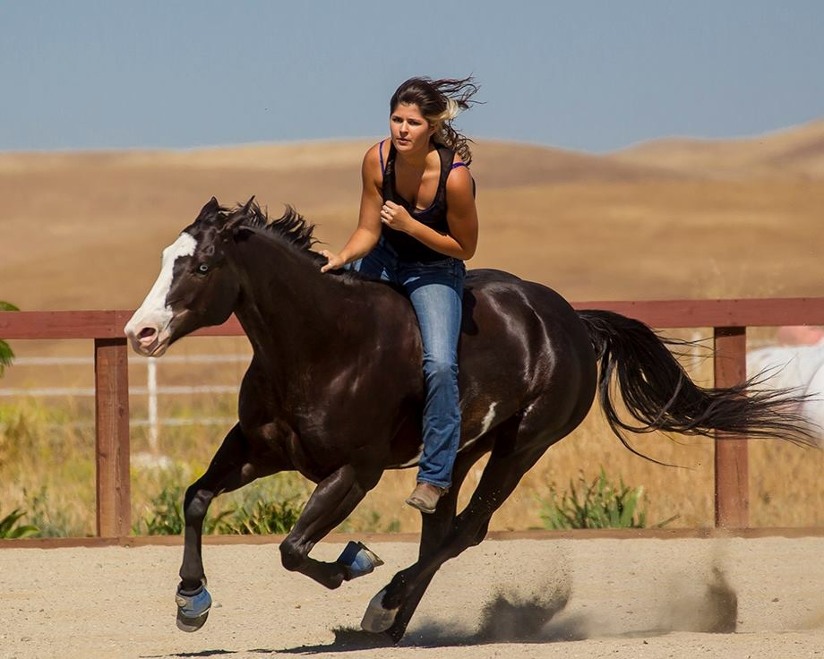
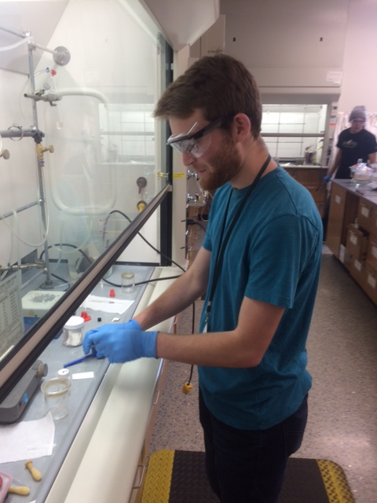
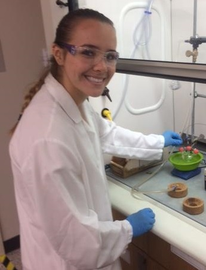

| Cole Detels mdetels(at)calpoly(dot)edu Date Joined: Spring 2019 Project: TonB Major: Biology Favorite Element: Cadmium |
|
| Metty Verbarendse mverbare(at)calpoly(dot)edu Date Joined: Spring 2019 Project: Kinase CK2 Major: Biomedical Engineering Favorite Element: Vanadium |
|
| Adam Cronin adcronin(at)calpoly(dot)edu Date Joined: Spring 2019 Project: Kinase STK16 Major: Chemistry Favorite Element: Copper |
|
|  | Mary Ronquillo mrronqui(at)calpoly(dot)edu Date Joined: Spring 2019 Project: TonB Major: Biology Favorite Element: Oxygen |
| Jessica Travis jmtravis(at)calpoly(dot)edu Date Joined: Spring 2019 Project: Kinase CK2 Major: Biology Favorite Element: Carbon |
|
| Eli O'Brien eobrie07(at)calpoly(dot)edu Date Joined: Spring 2019 Project: Kinase STK16 Major: Biology Favorite Element: Nitrogen |
|
| Kimiya Ganjooi kganjooi(at)calpoly(dot)edu Date Joined: Spring 2020 Project: Kinase CK2 Major: Biology Favorite Element: Sulfur |
|
| Neil Viswanathan nkviswan(at)calpoly(dot)edu Date Joined: Spring 2020 Project: Cathepsin Major: Kinesiology Favorite Element: Nitrogen |
|
|  | Trevan Klug tkklug(at)calpoly(dot)edu Date Joined: Spring 2020 Project: Kinase STK16 Major: Biology/Psychology Favorite Element: Magnesium |
| Hunter Johnson hjohns35(at)calpoly(dot)edu Date Joined: Spring 2020 Project: Kinase STK16 Major: Biology Favorite Element: Zirconium |
|
 |
Chloe Wong cwong141(at)calpoly(dot)edu Date Joined: Spring 2020 Project: Kinase CK2 Major: Chemistry Favorite Element: Oxygen |
 |
Julia Gibbs jugibbs(at)calpoly(dot)edu Date Joined: Spring 2020 Project: Cathepsin Major: Biochemistry Favorite Element: Nitrogen |
| Cameron Gleason cegleaso(at)calpoly(dot)edu Date Joined: Spring 2021 Project: Kinase STK16 Major: Biochemistry Favorite Element: Neon |
|
| Mark Troftgruben mtroftgr(at)calpoly(dot)edu Date Joined: Spring 2021 Project: Kinase CK2 Major: Biology Favorite Element: Krypton |
|
| Abby Kaplan akapla05(at)calpoly(dot)edu Date Joined: Spring 2021 Project: TonB Major: Biology Favorite Element: Chlorine |
|
|  | Hannah Mora hamora(at)calpoly(dot)edu Date Joined: Spring 2021 Project: Kinase CK2 Major: Biology Favorite Element: Plutonium |
|  | Connor Schmid cschmi14(at)calpoly(dot)edu Date Joined: Spring 2021 Project: Kinase STK16 Major: Chemistry Favorite Element: Neon |
|  | Bella Oldenburg ioldenbu(at)calpoly(dot)edu Date Joined: Spring 2021 Project: Major: Biology Favorite Element: Silicon |
|  | Robby Lammert rlammert(at)calpoly(dot)edu Date Joined: Spring 2021 Project: Kinase CK2 Major: Biochemistry Favorite Element: Carbon |
| Kevin Ahn Member: 2015-2016 Degree: B.S. Biochemistry After the E-Lab: M.D. Program, Creighton University |
 |
Grant Koch Member: 2015-2017 Degree: B.S. Biochemistry After the E-Lab: Ph.D. Program, UCSC |
|
| Julia Tryhorn Member: 2015-2017 Degree: B.S. Chemistry After the E-Lab: Pharm D. Program, California Northstate Coll. of Pharmacy |
Cory Chaplan Member: Summer 2015 Degree: M.S. Polymers & Coatings Science After the E-Lab: Oregon Health Authority |
||
| Anna Kashtanova Member: Summer 2016 Degree: B.S. Biology After the E-Lab: Masters Program, Cal Poly |
Dr. Daniel Bercovici Member: 2016 Degree: Ph.D. Chemistry University of Vermont |
||
| Brianna Sierra Member: 2015-2017 Degree: B.S. Chemistry After the E-Lab: Ph.D. Program, UC San Diego |
Jennifer Tran Member: 2015-2017 Degree: B.S. Chemistry After the E-Lab: PostBac Program, Keck Graduate Institute |
||
| Max Gomez Member: 2015-2017 Degree: B.S. Biochemistry After the E-Lab: Peace Corps |
Sierra Durham Member: 2015-2017 Degree: B.S. Chemistry After the E-Lab: Ph.D. Program, UC Davis |
||
| Bri Belanger Member: 2015-2017 Degree: B.S. Biology After the E-Lab: M.D. Program, CNU |
 |
Kenya Yniguez Member: 2015-2017 Degree: B.S. Biology After the E-Lab: SRI International |
|
| Horacio Lazaro Member: 2016-2017 Degree: B.S. Biochemistry After the E-Lab: Promega Biosciences |
Nikki Everson Member: 2015-2017 Degree: B.S. Biochemistry After the E-Lab: Ph.D. Program, NTNU |
||
| Michael Walls Member: 2016-2017 Degree: B.S. Biochemistry After the E-Lab: D.O./M.P.H. Program, Tauro University |
Jordan Bach Member: 2015-2018 Degree: B.S. Biochemistry After the E-Lab: Avid Bioservices |
||
| Tyler Sisley Member: 2016-2018 Degree: B.S. Biochemistry After the E-Lab: Ph.D. Program, Harvard |
 | Kasey Fitzsimmons Member: 2016-2018 Degree: B.S. Biology After the E-Lab: M.D. Program, UCLA |
 |
| Lauren Loop Member: 2016-2018 Degree: B.S. Biochemistry After the E-Lab: Therapeutics Inc. |
Natalie Sienko Member: 2016-2018 Degree: B.S. Biology After the E-Lab: Au.D. Program University of the Pacific |
||
| Nathan Soderberg Member: 2017-2019 Degree: B.S. Biochemistry After the E-Lab: SCS Engineers |
Brandon Nguyen Member: 2017-2019 Degree: B.S. Biochemistry After the E-Lab: M.D. Program, Temple University |
||
| Jarvis Law Member: 2017-2019 Degree: B.S. Biochemistry After the E-Lab: Thermo Fisher |
Bogdan Popa Member: 2017-2019 Degree: B.S. Biochemistry After the E-Lab: SRI International |
 |
|
| Aashrita Manjunath Member: 2017-2019 Degree: B.S. Biochemistry After the E-Lab: Ph.D. Program, UC Davis |
Tyler Leon Member: Summer 2019 Paso Robles High School After the E-Lab: Cal Poly |
||
| Dr. Duminda Liyanage Member: 2017-2019 Degree: Ph.D. Chemistry University of North Dakota After the E-Lab: Soka University of America |
Ryan Schioldager Member: 2018-2020 Degree: B.S. Biochemistry After the E-Lab: Pfizer |
||
| Josh Gieschen Member: 2018-2020 Degree: B.S. Biochemistry After the E-Lab: M.D. Program, UC San Diego |
Eric Schwegman Member: 2018-2020 Degree: B.S. Biochemistry After the E-Lab: D.O. Program, ICOM |
||
| Ivan Hernandez Member: 2018-2020 Degree: B.S. Chemistry After the E-Lab: Ph.D. Program, UC Santa Barbara |
Spenser Platt Member: 2018-2020 Degree: B.S. Biochemistry |
||
| Hunter Wood Member: 2018-2020 Degree: B.S. Chemistry After the E-Lab: Ph.D. Program, Carnegie Mellon University |
Honorary Members
| Katie Yan Mentored at: UC Santa Cruz Project: TarB-NO2 Degree: B. S. Chemistry |
Dr. Nick Ball-Jones Mentored at: UC Santa Cruz Project: TarB-NO2 Degree: Ph.D. Org. Chem. |
||
| Cassandra Delieto Mentored at: UC Santa Cruz Project: TarB-NO2 Degree: B.S. Chemistry |
Matthew Buckman Mentored at: UC Santa Cruz Project: TarB-NO2 Degree: MSES Civil Eng. |
||
| Nick Whittington-Davis Mentored at: SFSU Project: Harmine |
 |